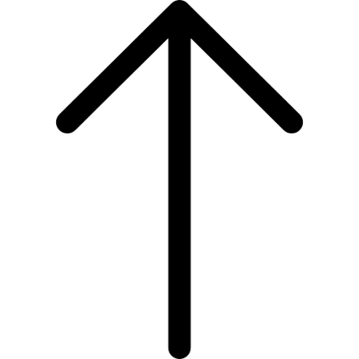

Formula 1 Formula 1
Formula 1 Formula 1 
Примечания
На уикендах со спринтом вместо FP2 и FP3 проводятся спринт-квалификация и спринт (около 100 км)
Гонка не может длиться дольше двух часов
С 2026 года действует новый технический регламент: машины стали меньше и легче,
а электромотор даёт около половины мощности силовой установки

Гоночный уикенд Команды и чемпионы История Перейти вниз
Первый этап чемпионата мира Формулы 1 прошёл 13 мая 1950 года на трассе Сильверстоун в Великобритании.
Победил итальянец Джузеппе Фарина на Alfa Romeo — по итогам сезона он стал первым чемпионом мира.
В 1950-х годах лидировал аргентинец Хуан Мануэль Фанхио — пять чемпионских титулов.
Ferrari — единственная команда, которая выступает в чемпионате с самого первого сезона.
В конце 1980-х главным соперничеством было противостояние напарников по McLaren — Айртона Сенны и Алена Проста.
Рекорд по числу титулов — по семь у Михаэля Шумахера и Льюиса Хэмилтона.
Хэмилтону принадлежат рекорды по числу побед (больше ста) и поул-позиций.
Самая известная гонка — Гран-при Монако на узких улицах Монте-Карло, где почти невозможно обгонять.
Современный болид разгоняется до скорости свыше 350 км/ч.
Лучшие механики меняют все четыре колеса на пит-стопе меньше чем за две секунды.
Первым российским пилотом Формулы 1 стал Виталий Петров (Renault, 2010).
В 2011 году Петров занял третье место на Гран-при Австралии — первый подиум гонщика из России.
Даниил Квят трижды поднимался на подиум, выступая за Red Bull и Toro Rosso.
Гран-при России проходил в Сочи с 2014 по 2021 год.
Сегодня в календаре чемпионата больше двадцати гонок на пяти континентах.